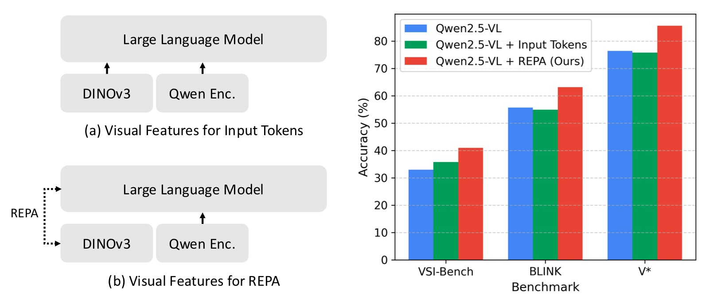
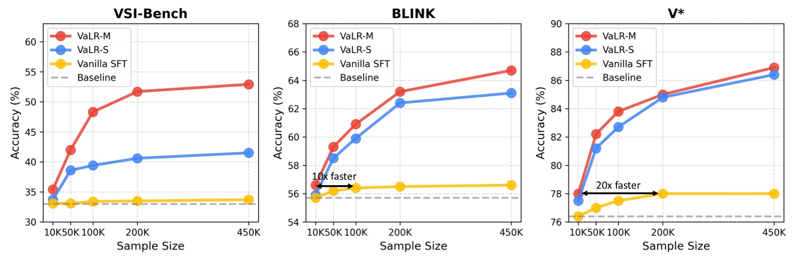
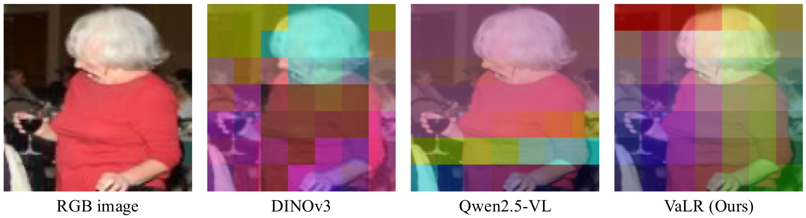

VaLR 论文分享简明笔记
本文基于以下本地材料整理：
- 详细笔记：
VaLR_阅读笔记.md- 论文 tex 源码：
arXiv-2602.04476v2/main.tex- 论文图片：
arXiv-2602.04476v2/images/*.pdf- 本文图片导出目录：
assets/valr/
1. 一句话讲清楚
VaLR 的核心想法是：MLLM 在做 CoT 推理时，每一步思考之前先默默地"看一眼"图像——动态生成一组与视觉特征对齐的 latent token，防止视觉信息随着推理链变长而逐渐"忘掉"。
这篇论文的核心不是又做了一个更大的 MLLM，而是发现并解决了 MLLM 的关键缺陷：随着生成序列增长，视觉信号会逐渐衰减（dilution of visual information），而 VaLR 通过在每步推理前插入 vision-aligned latent token 作为"视觉检查点"，让模型始终保持在视觉 grounding 上。

图 1：VaLR 框架总览。图片分左右两个子图，展示 VaLR 的推理机制和训练方式。
子图 (a) VaLR 推理过程：展示模型在一次完整推理中的 token 生成流程。左侧输入图像 I_0, I_1, I_2（多视角图像，颜色深浅代表不同视角）和文本问题。推理从左到右展开：
- 首先处理图像 token（左侧橙色横条）和文本 token（紫色横条），经过 Transformer 得到 hidden states（蓝色竖条）。
- 然后进入"潜在模式"（latent mode，绿色区域）：模型预测
<latent>特殊 token 后，开始生成 K 个连续 latent token。每个 latent token 的输入不是普通 token embedding，而是上一个 latent token 的 hidden state h_i（图中弯箭头所示），形成自循环。latent token 不与任何文字对应，是纯连续向量。 - K 步后预测
</latent>，切换回"语言模式"（language mode，蓝色区域）：生成第一段文本推理步骤 r^(1)（如"Step 1: Identify objects"）。 - 再次进入潜在模式（第二个绿色区域），生成新一轮 latent token，再回到语言模式生成 r^(2)，以此类推，直至最终输出 answer。
- 底部标注："Per-step visual recall via latent tokens"（每步通过 latent token 回注视觉信息），强调 latent token 的作用是为每步推理提供视觉锚点。
子图 (b) REPA 对齐训练（仅训练时使用，推理时不依赖）：
- 左侧：原始输入图像 I^(i) 经过冻结的外部视觉编码器（如 DINOv3、SigLIP、CLIP、π³），提取出 patch-wise 视觉特征 F_φ^(i)（蓝色特征图网格）。
- 右侧：MLLM 在潜在模式下生成的 latent token hidden states，通过可学习的 MLP 投影头 ψ 和 Upsample 操作映射到与视觉特征相同的维度，得到 F̂_MLLM^(i)（绿色特征图网格）。
- 中间：计算两组特征图的 patch-wise 余弦相似度，作为 REPA 对齐损失 L_REPA。这个损失强制 MLLM 的 latent 表示向视觉编码器学到的真实视觉特征靠拢。
- 核心洞察：外部视觉编码器仅在训练时使用（"External vision encoders used during training only"），训练完成后 MLLM 自己就内化了视觉 grounding 能力，推理时无需额外编码器。
以前：image + question -> CoT 推理 -> answer
↓ 视觉信号逐渐衰减
现在：image + question -> [看眼图] step1 -> [看眼图] step2 -> ... -> answer
↑ 每步前用 latent token 回注视觉信息
关键：latent token 与视觉编码器特征对齐，训练后内化视觉 grounding 能力
2. 论文要解决什么问题
MLLM 在常规 VQA 上表现不错，但一到需要长链推理的任务就容易"跑偏"。根本原因不是语言推理能力不够，而是：
image + question -> step1 -> step2 -> step3 -> ... -> stepN -> answer
↑视觉信号 ↑视觉信号几乎没了
两个核心痛点：
-
视觉信号稀释：自回归生成过程中，文本 token 越生成越多，图像 token 在长序列中的相对权重越来越小。模型逐渐"忘记"图像里有什么，推理变成纯文本游戏。
-
现有方法不可持续：
- 纯文本 CoT 增强（如 Math-LLaVA、Flow-DPO）：增强的是文本推理，不解决视觉衰减。
- 交错视觉 token（如 DeepEyes、Machine-CoT）：视觉信息只作为初始固定上下文一次性注入，后续推理步骤无法重新感知图像。
- 潜在空间推理（如 Monet、CoVT、LVR）：仍然只使用静态的初始视觉特征，没有动态回注机制。
VaLR 的切入点是：与其一次性给足视觉信息然后指望模型记住，不如在每一步推理前都给模型一个"再看一眼"的机会。 这个"再看一眼"不是重新跑视觉编码器，而是通过训练让模型学会在 latent token 中内化视觉信息。
3. 方法总览
VaLR 把一次多模态推理拆成交替的两段：
image + question
-> <latent> latent_tokens </latent> (visual checkpoint)
-> reasoning step 1
-> <latent> latent_tokens </latent> (visual checkpoint)
-> reasoning step 2
-> ...
-> answer
直观解释：
<latent> ... </latent>：模型进入"潜在模式"，生成 K 个连续 latent token。这些 token 不对应任何文本词汇，而是以模型内部 hidden state 的形式传播。- latent token 的训练目标：与外部视觉编码器（DINOv3、SigLIP、CLIP 等）的 patch-wise 特征做余弦相似度对齐（REPA loss），鼓励 latent token 编码丰富的视觉信息。
- 推理步骤：latent token 为后续的文本 CoT 推理提供"视觉锚点"，让模型知道现在看到的是什么、应该关注图像的哪些区域。
| 模块 | 做什么 |
|---|---|
| Latent token generation | 在每步推理前生成 K 个潜在 token，作为视觉检查点 |
| REPA alignment | 训练时将 latent token 的 hidden states 对齐到视觉编码器特征 |
| Multi-encoder alignment | 利用多个视觉编码器的互补表征（语义 + 空间 + 3D） |
| Two-stage curriculum | Stage 1 学 CoT 推理 → Stage 2 学 latent 推理 + REPA |
4. 核心方法细节
4.1 潜在推理机制（Latent Reasoning）
VaLR 在推理时交替切换两种模式：
语言模式（正常自回归）：
E_{t+1} = [E_t; e(x_{t+1})] # 输入是下一个 token 的 embedding
H_{t+1} = Transformer(E_{t+1})
潜在模式（latent reasoning）：
E_{t+1} = [E_t; h_t] # 输入是上一时刻的 hidden state
H_{t+1} = Transformer(E_{t+1})
关键区别：潜在模式下不使用 token embedding，而是直接把上一时刻的 hidden state h_t 喂回 Transformer。这让模型在连续向量空间中"思考"，不受离散词汇表的限制。
模型通过预测特殊 token 来切换模式：
- 预测
<latent>→ 进入潜在模式，固定 K 步后自动退出 - 预测
</latent>→ 回到语言模式，继续文本生成
4.2 REPA 表征对齐
latent token 不能是"空的"——它们需要编码视觉信息才有意义。VaLR 的做法是：训练时将 MLLM 中间层的 latent token hidden states 对齐到预训练视觉编码器的特征。
直觉：就像教学生画画时给他一张参考图，告诉他"你画的应该像这个"——REPA 告诉 MLLM"你的 latent 表示应该像 DINOv3 对这张图的理解"。
具体流程：
- 对每步推理对应的目标图像
I^(i)，用冻结的视觉编码器 φ 提取 patch-wise 特征：F_φ^(i) ∈ R^(P×D) - 提取 MLLM 第 12 层（中间层）的 latent token hidden states：
F_MLLM^(i) - 通过可学习 MLP ψ 投影并 upsample 到与视觉特征相同维度：
F̂_MLLM^(i) = ψ(Upsample(F_MLLM^(i))) - 计算 patch-wise 余弦相似度作为对齐损失：
关键设计选择：
- 对齐目标层选在 MLLM 第 12 层（中间层），消融实验证实这里视觉信息最显著
- 对齐只用于训练，推理时不依赖外部编码器——MLLM 已经内化了视觉 grounding 能力
- 可以同时对齐多个编码器，获取互补的视觉表征（见下文）
4.3 多编码器对齐
不同视觉编码器有不同"专长"，VaLR 可以同时对齐多个：
| 编码器 | 擅长能力 | 典型代表 |
|---|---|---|
| CLIP / SigLIPv2 | 语义理解（这是什么物体） | CLIP ViT-L, SigLIPv2 ViT-L |
| DINOv2/v3 | 细粒度外观 + 空间关系（物体在哪里、什么结构） | DINOv3 ViT-L |
| π³ | 3D 空间结构（深度、几何关系） | π³ ViT-L |
多编码器 REPA 损失就是各编码器 REPA 损失的均值，每个编码器有独立的投影头 ψ_m：
消融实验的核心规律是"专长互补"：
- π³ 加入后，VSI-Bench（3D 空间推理）大幅提升：41.5% → 52.4%
- SigLIPv2 加入后，MMStar（语义理解）提升：70.8% → 72.0%
- 三者全部启用达到全局最优

图 2：REPA 对齐 vs 将 DINOv3 特征作为输入 token 两种使用外部视觉特征的方式对比。图片分左右两个子图，并在三个 benchmark 上比较。
子图 (a) Visual features as input tokens（绿色）：将 DINOv3 提取的视觉特征直接拼接为 MLLM 的输入 token（类似给模型额外加一组图像 token）。这种方式相当于在推理开始时一次性注入额外视觉信息，但特征作为固定输入存在于整个序列中，不会随推理步骤动态更新。图表左侧显示输入流程：Image → DINOv3 → Input tokens of MLLM。
子图 (b) VaLR REPA alignment（红色）：本文提出的 REPA 对齐方式。DINOv3 特征不作为输入 token，而是在训练时作为 latent token 的对齐目标（REPA loss）。图表左侧显示训练流程：Image → DINOv3 → MLLM embeddings，标注 "Align the embeddings via REPA"。注意推理时不需要 DINOv3（标注 "Testing"）。
三组柱状图对比（横轴为 benchmark，纵轴为准确率 %）：
- VSI-Bench：REPA（红色）约 41.5% vs Input token（绿色）约 34%，REPA 高约 7.5 个百分点，优势最明显——证明在需要多视角长上下文理解的任务中，动态对齐远优于静态注入。
- BLINK：REPA 约 63% vs Input token 约 57%，高约 6 个百分点。
- V*：REPA 约 86% vs Input token 约 82%，高约 4 个百分点。
- 三个 benchmark 上 REPA 全面优于输入 token 方式。核心优势：(1) 推理时不需要外部编码器，效率更高；(2) REPA 使每步推理都能动态回注视觉信息，而输入 token 方式仅提供一次性静态信息。
5. 训练目标与流程
论文采用两阶段课程学习，逐步赋予 MLLM 潜在推理能力：
flowchart TD
A["Qwen2.5-VL-7B<br/>(预训练 MLLM)"] --> B["Stage 1: 标准 CoT SFT<br/>450K 样本"]
B --> C["Stage 2: Latent Token 训练 + REPA<br/>450K 样本"]
C --> D["VaLR<br/>具备 vision-aligned latent reasoning"]
Stage 1：标准 CoT SFT
- 数据集：450K 样本混合（Zebra-CoT、CogCoM、ReFocus、Visual-CoT、OneThinker-SFT、GCoT）
- 目标：标准的自回归语言建模（CE loss），让模型学会 CoT 推理范式
- 冻结视觉编码器，仅训练语言模型解码器
- 学习率 1e-5，DeepSpeed ZeRO-2，4× A100
Stage 2：Latent Token 训练 + REPA
- 将 CoT 数据改造：每个推理步骤前插入 K=16 个 latent token（首尾用
<latent>/</latent>包裹） - 多视角数据：用 GPT-4o 自动标注每个推理步骤对应的目标图像
- 交错数据：利用数据集中自然存在的图像插入位置触发 latent 模式
- 总损失：
L = L_CE + λ·L_REPA（λ=0.5，消融实验证实最优） - 学习率 2e-6（LLM）+ 1e-5（MLP 投影头）
训练资源
| 阶段 | 数据量 | 硬件 | 关键配置 |
|---|---|---|---|
| Stage 1 SFT | 450K CoT 样本 | 4× A100 | lr=1e-5, DeepSpeed ZeRO-2, batch=2/GPU, grad_accum=16 |
| Stage 2 REPA | 450K CoT 样本 | 4× A100 | lr=2e-6(LLM) / 1e-5(MLP), λ=0.5, K=16, epoch=1 |
6. 实验结论
6.1 3D 空间推理（VSI-Bench）
VSI-Bench 需要模型从多视角图像中整合空间信息做推理，是对长上下文视觉记忆的硬核测试。
| 方法 | Avg. | 物体计数 | 绝对距离 | 相对距离 | 路径规划 |
|---|---|---|---|---|---|
| GPT-4o | 34.0 | 46.2 | 5.3 | 37.0 | 31.5 |
| Qwen2.5-VL-7B | 33.0 | 40.9 | 14.8 | 38.6 | 33.0 |
| + vanilla SFT | 33.7 | 42.3 | 14.7 | 39.4 | 32.5 |
| + LVR | 18.4 | 21.4 | 3.6 | 35.1 | 32.0 |
| + CoVT | 18.6 | 16.5 | 2.3 | 35.9 | 25.8 |
| + Monet | 14.0 | 1.9 | 0.1 | 38.0 | 24.2 |
| VaLR-S (单编码器) | 41.5 | 49.0 | 24.5 | 43.9 | 34.0 |
| VaLR-M (多编码器) | 52.9 | 66.4 | 40.6 | 50.0 | 35.1 |
最值得关注的数据：
- LVR、CoVT、Monet 在 VSI-Bench 上全部崩溃（14-18%），远不如不做任何改动的原始 Qwen2.5-VL（33.0%）。这强烈证明：没有视觉对齐的潜在推理在长上下文任务上不如不推理。
- VaLR-M 从 33.0% 提升到 52.9%，提高 19.9 个百分点，在 8 个子任务上全面 SOTA。尤其在需要精确空间测量的子任务（绝对距离 5.3% → 40.6%，物体计数 40.9% → 66.4%）上提升巨大。
6.2 感知任务 Benchmark
| 方法 | BLINK | MMVP | MMStar | V^* | CVBench |
|---|---|---|---|---|---|
| GPT-4o | 63.0 | 68.7 | 65.2 | 42.9 | 79.2 |
| Qwen2.5-VL-7B | 55.7 | 56.0 | 67.1 | 76.4 | 74.5 |
| + LVR | 52.8 | 59.3 | 64.4 | 81.7 | 76.9 |
| + CoVT | 56.0 | 58.7 | 69.2 | 78.0 | 80.0 |
| + Monet | 49.1 | 50.0 | 53.3 | 83.3 | 71.1 |
| VaLR-S | 63.1 | 60.3 | 70.8 | 86.4 | 83.1 |
| VaLR-M | 64.7 | 60.3 | 72.3 | 86.9 | 87.6 |
关键观察：
- VaLR 不仅在长上下文任务上提升显著，在短上下文感知任务上也全面优于 baseline——说明视觉 grounding 是通用能力，不是长任务专属。
- 与推理模型 R1-OneVision（50.1% BLINK）和 Ocean-R1（56.8% BLINK、78.0% V^*）相比，VaLR 表现更稳定。推理模型在某些 benchmark 上强、某些上弱（如 Ocean-R1 在 BLINK 仅 56.8%），而 VaLR 在所有感知 benchmark 上一致提升。
6.3 Test-time Scaling 行为（论文最大亮点）

图 3：推理长度 vs 模型性能分析。四个子图分别对应四个 benchmark，横轴均为推理长度（generated reasoning length in tokens），测试模型在不同推理长度下的性能变化趋势。VaLR 是唯一在推理长度增加时性能单调提升的方法。
四个子图的布局和含义：
四个 benchmark 覆盖不同类型的推理任务——MathVista（数学推理）、MathVision（数学视觉推理）、MMhalu（多模态幻觉检测，越低越好）、MMVP（细粒度视觉感知）。对每个 benchmark，将测试样本按生成的推理 token 数分组，统计每组的准确率或幻觉率。红色曲线 = VaLR，蓝色曲线 = Ocean-R1，绿色曲线 = LVR。
子图 (a) MathVista（Acc. %）：
- 横轴：推理长度（tokens），从约 100 到 500+ tokens。
- 纵轴：准确率（%），约 55-70% 区间。
- Ocean-R1（蓝色）在约 200 tokens 时达到峰值约 66%，之后随推理长度增加持续退化，到 500+ tokens 降至约 60%。
- LVR（绿色）整体低于 Ocean-R1，在中等长度达到峰值后同样退化。
- VaLR（红色）起点约 60%，随着推理长度从 100 → 500+ tokens，性能从 60% 持续单调提升至约 68%，全程无退化。
子图 (b) MathVision（Acc. %）：
- 横轴：推理长度（tokens），约 100 到 500+ tokens。
- 纵轴：准确率（%），约 25-42% 区间。注意整体数值低于 MathVista，因为 MathVision 是更难的视觉数学推理 benchmark。
- Ocean-R1（蓝色）和 LVR（绿色）在约 200-300 tokens 后均出现明显退化，LVR 退化更严重。
- VaLR（红色）从约 28% 起步，在 400+ tokens 处升至约 38-42%，表现出一致的上升趋势。
子图 (c) MMhalu（Hal. Rate %，越低越好）：
- 横轴：推理长度（tokens），约 100 到 500+ tokens。
- 纵轴：幻觉率（%），越低越好，约 35-55% 区间。
- 这是唯一一个"越低越好"的指标。Ocean-R1（蓝色）的幻觉率随推理长度增加而持续上升（从约 42% 升至约 52%），推理越长幻觉越多。
- LVR（绿色）同样随推理长度增加而幻觉率上升。
- VaLR（红色）的幻觉率随推理长度增加而持续下降（从约 48% 降至约 38%），推理越长幻觉越少——这是反直觉且强有力的结论，直接证明视觉对齐让模型"看清楚了细节"而不是"脑补"。
子图 (d) MMVP（Acc. %）：
- 横轴：推理长度（tokens），约 60 到 350 tokens。注意这个 benchmark 的推理长度范围比其他三个窄。
- 纵轴：准确率（%），约 50-68% 区间。
- Ocean-R1（蓝色）在约 150 tokens 达到峰值约 63%，之后急剧退化至约 57%，推理长度从 150→300 tokens 下降约 6 个百分点。
- LVR（绿色）全程低于 60%，表现最差，说明缺乏视觉对齐的潜在推理在细粒度视觉任务上完全失效。
- VaLR（红色）从约 56% 起步，持续提升至约 66%，全程高于所有基线，且在 300 tokens 处仍保持上升趋势。
核心结论：四个 benchmark 上的趋势高度一致——Ocean-R1 和 LVR 在中等推理长度后开始退化，VaLR 在全部四个 benchmark 上均表现出单调提升。这直接验证了论文的核心主张：没有视觉对齐，更长的推理反而有害（模型在"脑补"）；有了视觉对齐，推理越长越受益。这是 MLLM 领域首次观察到类似 LLM 的 test-time scaling law。
6.4 消融实验
REPA 对齐层分析：
论文还消融了 MLLM 中对齐层的选择。在 Qwen2.5-VL-7B 的 28 层中，选取第 4 层（Front）、第 12 层（Middle）、第 27 层（Last）分别做 REPA 对齐：
| 对齐层 | BLINK | MMVP | MMStar | V^* | CVBench |
|---|---|---|---|---|---|
| Qwen2.5-VL-7B (baseline) | 55.7 | 56.0 | 67.1 | 76.4 | 74.5 |
| Front (第 4 层) | 59.2 | 55.7 | 68.5 | 83.8 | 78.6 |
| Middle (第 12 层) | 63.1 | 60.3 | 70.8 | 86.4 | 83.1 |
| Last (第 27 层) | 62.8 | 60.0 | 70.8 | 85.3 | 82.5 |
结果表明虽然各层对齐均有提升，但中间层（12th）效果最优，说明 MLLM 中间层确实是视觉信息最集中的位置。这一发现与 REPA、YourVLM、Devil's Advocate 等 prior work 的观察一致。
REPA 表征对齐的有效性：
| 配置 | VSI-Bench | BLINK | V^* | CVBench |
|---|---|---|---|---|
| Qwen2.5-VL-7B | 33.0 | 55.7 | 76.4 | 74.5 |
| VaLR w/o VA（无视觉对齐） | 34.0 | 57.1 | 75.9 | 73.4 |
| VaLR w/ QE（Qwen 原生编码器对齐） | 39.6 | 58.9 | 81.7 | 81.6 |
| VaLR w/ DINOv3 | 41.5 | 63.1 | 86.4 | 83.1 |
三层信息：
- 纯潜在推理（w/o VA）：几乎无提升（VSI-Bench 34.0 vs 33.0），视觉对齐是 VaLR 的核心。
- 使用 Qwen 原生编码器对齐：有效但不如外部编码器（VSI-Bench 39.6 vs 41.5），说明外部编码器的特征更丰富。
- DINOv3 对齐效果最好，因为它提供细粒度的空间和外观特征。V^* 上达到 86.4%（+10.0 个百分点），在所有编码器中最优。
不同视觉编码器的通用性：
| 对齐编码器 | BLINK | MMVP | MMStar | V^* | CVBench |
|---|---|---|---|---|---|
| Qwen2.5-VL-7B (baseline) | 55.7 | 56.0 | 67.1 | 76.4 | 74.5 |
| + CLIP | 62.3 | 59.3 | 71.0 | 83.2 | 79.1 |
| + SigLIPv2 | 62.8 | 59.7 | 71.3 | 83.2 | 81.9 |
| + DINOv2 | 62.7 | 60.0 | 70.7 | 83.8 | 81.8 |
| + DINOv3 | 63.1 | 60.3 | 70.8 | 86.4 | 83.1 |
VaLR 对 CLIP、SigLIPv2、DINOv2、DINOv3 全部有效，编码器越强增益越大。DINOv3 在 V^* 上达到 86.4%（+10.0 个百分点），在所有编码器中最优。
多编码器的互补效应：
| π³ | DINOv3 | SigLIPv2 | VSI-Bench | BLINK | MMStar |
|---|---|---|---|---|---|
| ✗ | ✗ | ✗ | 33.0 | 55.7 | 67.1 |
| ✓ | ✓ | ✗ | 52.4 | 64.6 | 68.9 |
| ✗ | ✓ | ✓ | 41.9 | 62.5 | 72.0 |
| ✓ | ✓ | ✓ | 52.9 | 64.7 | 72.3 |
π³ 对 3D 任务（VSI-Bench）提升巨大（41.9 → 52.4），SigLIPv2 对语义任务（MMStar）增益明显（68.9 → 72.0）。三者结合达到全局最优，验证了专长互补的假设。
数据扩展性：

图 4：数据扩展性分析。三个子图分别对比 Vanilla SFT（灰色）、VaLR-S（单编码器，蓝色）、VaLR-M（多编码器，红色）在三个 benchmark 上随训练样本增加的性能变化。
三个子图的布局：横轴均为训练数据量（Training data size），五个刻度为 10K、50K、100K、200K、450K。纵轴均为准确率（Accuracy %）。三条曲线分别代表三种训练配置。
子图 (a) VSI-Bench：
- 横轴：训练数据量（10K → 450K）。
- 纵轴：准确率（%），约 32-54% 区间。
- Vanilla SFT（灰色）：起点约 32%，在 200K 后趋于饱和，450K 时约 34%。
- VaLR-S（蓝色）：10K 时约 34%，随数据增长持续提升，450K 达约 41%。
- VaLR-M（红色）：10K 时约 36%，全程高于其他两条曲线，450K 达约 53%。从 10K → 450K 提升约 17 个百分点，增长斜率最大。
子图 (b) BLINK：
- 纵轴：准确率（%），约 55-65% 区间。
- Vanilla SFT（灰色）：10K 时约 55%，200K 时约 57%，几乎不增长。
- VaLR-S（蓝色）：10K 时约 57%，增长平缓，450K 时约 63%。
- VaLR-M（红色）：10K 时约 59%，450K 时约 65%，全程领先。
子图 (c) V*：
- 纵轴：准确率（%），约 70-87% 区间。这个 benchmark 上数据扩展性差异最显著。
- Vanilla SFT（灰色）：10K 时约 73%，200K 后约 78% 就几乎不再增长，呈现明显的数据饱和。
- VaLR-S（蓝色）：10K 时约 74%，450K 时约 86%。值得注意的是，VaLR-S 在约 50K 时就达到了 Vanilla SFT 在 450K 时的性能水平（~82%），数据效率提升近 9 倍。
- VaLR-M（红色）：10K 时约 78%，450K 时约 87%。VaLR-M 在 10K 时就超过了 Vanilla SFT 在 200K 时的性能，论文声称 VaLR-M 达到同等性能所需的训练数据仅为 Vanilla SFT 的 1/20 以下。
核心结论：(1) Vanilla SFT 在 200K 后明显饱和，VaLR 两种变体都随数据增长持续提升，说明视觉对齐让模型更有效地从训练数据中提取信息；(2) 多编码器（VaLR-M）在数据效率上远超单编码器和 vanilla SFT；(3) 在所有数据点上，VaLR-M > VaLR-S > Vanilla SFT，呈现一致的层级关系。
推理效率：
| 方法 | 32-view (秒) | 1-view (秒) |
|---|---|---|
| Qwen2.5-VL | 1.21 | 0.64 |
| + vanilla SFT | 1.43 | 0.68 |
| + LVR | 1.49 | 0.66 |
| + Monet | 1.51 | 0.79 |
| + VaLR | 1.55 | 0.80 |
VaLR 的推理开销很小（比 vanilla SFT 仅慢约 10%），且推理时完全不需要外部视觉编码器。
6.5 特征可视化

图 5：MLLM 中间层特征可视化。对比 VaLR 训练前后 MLLM 第 12 层 hidden states 的主成分可视化，直观展示 REPA 对齐对内部表征的影响。
图中展示多组图像的三列对比：
- 左列（输入图像）：原始输入图像。
- 中列（Before REPA / w/o VA）：未做 REPA 对齐时，MLLM 第 12 层 hidden states 的主成分可视化。特征图呈现模糊、扩散的全局激活模式，没有明确的物体边界或语义结构——模型的内部表征缺乏视觉 grounding。
- 右列（After REPA / VaLR）：REPA 对齐训练后，同样层的 hidden states 主成分可视化。特征图呈现清晰的物体轮廓、语义分割和空间结构——猫的头部形状、室内场景的墙面和家具布局、物体的边缘轮廓都变得清晰可辨。
核心信息：REPA 对齐不是抽象的数字提升，而是从根本上改变了 MLLM 内部表征的质量——从"模糊感知"变为"清晰看见"。这与图 3 的 test-time scaling 行为形成闭环：因为 MLLM 真的"看清楚了"，所以推理越长越受益；而 baseline 因为"看不清楚"，推理越长越容易脑补幻觉。
7. 这篇论文的核心贡献
可以概括成三点：
-
发现并解决了 MLLM 视觉信号衰减问题。 明确指出 MLLM 在长上下文推理中视觉信息逐渐稀释，这是限制 test-time scaling 的根本原因。
-
提出 VaLR 框架。 通过在每步 CoT 推理前动态生成 vision-aligned latent token，让模型始终保持在视觉 grounding 上，以极小推理开销（+10%）实现显著性能提升。
-
首次在 MLLM 上展示 test-time scaling 行为。 VaLR 是第一个随着推理链增长性能单调提升的 MLLM 方法——baseline 在长推理中退化，VaLR 持续受益。这为 MLLM 的推理效率研究开辟了新方向。
8. 局限性
- 数据依赖：多视角数据需要 GPT-4o 辅助标注每步推理对应的目标图像，引入了外部依赖和一定的数据质量不确定性。
- 固定 K 值：目前 K=16 是固定长度，不如 LaST-R1 的 adaptive CoT 那样可以根据需要动态调整 latent 长度。
- Benchmark 验证：主要在 VQA benchmark 上验证，论文定位的 CUA 和 VLA 场景缺少真实环境评估。
- 与 RL 推理的关系：与 R1-style 强化学习推理（如 R1-OneVision）的对比有限——后者在某些 benchmark 上意外退步，原因值得深入。
- 语言 CoT 质量保真度：目前训练使用固定数据集的 CoT 标注，如果 CoT 本身有错误或不完整，REPA 对齐会强化这些错误的视觉关联。
9. 常见问题
Q1：latent token 是可解释的自然语言吗？
不是。latent token 是连续向量，不映射到任何文字。它们更像是模型内部的"视觉摘要"——通过 REPA 对齐学到的、关于图像的紧凑表示。这些表示对后续的文本推理提供视觉 grounding，但本身不是人类可读的。
Q2：REPA 对齐只在训练时使用，推理时怎么保证模型还记得视觉信息？
这正是 VaLR 设计的巧妙之处：REPA 对齐是一种知识蒸馏——训练时逼着 MLLM 的中间层学习输出与视觉编码器相似的特征。训练完成后，这种能力被内化到模型参数中。推理时，模型生成 latent token 的过程自然产生了富含视觉信息的 hidden states，不需要再跑外部编码器。
消融实验也证实了这一点：用 Qwen 原生编码器（非外部）对齐同样有效，说明关键不是"外部编码器更好"，而是"对齐提供了一个有效的视觉特征学习信号"。
Q3：为什么不直接把 DINOv3 特征作为输入 token 喂给 LLM？
论文对比了这两种方法（图 2），REPA 对齐全面优于直接输入视觉特征。原因是：
- 效率：作为输入 token 会增加序列长度和推理计算量，且每次推理都要跑 DINOv3。REPA 方式推理时不依赖外部编码器。
- 效果：输入 token 方式只提供一次性的静态信息；REPA 方式让每个推理步骤都可以动态地从图像中提取所需信息。
Q4：VaLR 和 LaST-R1、Heima 等其他 latent reasoning 工作有什么关系？
都使用了 latent token 作为"思考"媒介，但定位不同：
- LaST-R1：latent token 用于机器人 VLA 中的物理推理，target 来自 DINOv3 的
<CLS>token - Heima：latent token 用于高效推理，核心是隐藏思考过程
- VaLR：latent token 用于多模态 CoT 推理中的视觉信息保持，核心贡献是发现了视觉信号衰减问题并通过每步视觉对齐解决
VaLR 的独特之处在于：它是每步推理前都做一次视觉对齐，而不是仅在开始或结束时对齐一次。
Q5：VaLR 的最大局限是什么？
详见第 8 节"局限性"。
10. 关键概念速查
| 概念 | 含义 |
|---|---|
| VaLR | Vision-aligned Latent Reasoning，在每步推理前生成视觉对齐的 latent token 作为视觉检查点 |
| Latent Token | 不对应任何文字的连续向量，通过 self-loop（hidden state → input）在潜在空间中推理 |
| Latent Mode | 模型使用上一时刻 hidden state 作为下一输入的模式，区别于使用 token embedding 的 Language Mode |
| REPA | Representation Alignment，将 MLLM 中间层特征与外部视觉编码器的 patch-wise 特征做余弦相似度对齐 |
| 视觉信号稀释 (Visual Information Dilution) | 随着自回归推理链增长，图像 token 在整个序列中的相对权重下降，模型逐渐"忘记"视觉信息 |
| Multi-encoder Alignment | 同时对齐多个视觉编码器（DINOv3, SigLIPv2, π³），利用其互补表征（空间、语义、3D） |
| Test-time Scaling | VaLR 首次在 MLLM 领域展示出类似 LLM 的 test-time scaling law：推理越长性能越高 |
| VaLR-S | Single encoder version，使用单个 DINOv3 做 REPA 对齐 |
| VaLR-M | Multi-encoder version，同时对齐 DINOv3 + SigLIPv2 + π³，效果最优 |
| Stage 1 / Stage 2 | 两阶段课程学习：Stage 1 学标准 CoT 推理（CE loss），Stage 2 插入 latent token 并施加 REPA loss |
11. 最短版 takeaway
VaLR = CoT reasoning + vision-aligned latent checkpoint per step。
它的核心洞察是：MLLM 在做长推理时会逐渐"忘记"图像——不是因为推理能力不够，而是因为视觉信号被文本序列稀释了。VaLR 的解决方法是在每个推理步骤前插入一组与视觉编码器特征对齐的 latent token，作为"视觉检查点"。这种方法简单、高效（推理开销 +10%）、通用（适配任何视觉编码器），且首次让 MLLM 展现出类似 LLM 的 test-time scaling 行为。